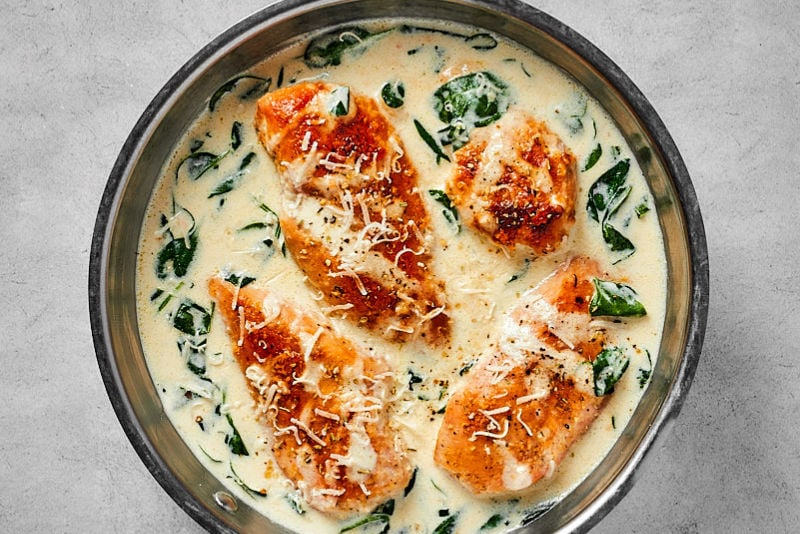

Chicken Florentine Recipe
If you want more recipes, click here to go back to main page!

What is Chicken Florentine?
Chicken Florentine is a dish that is defined by its rich and creamy sauce. It is a dish that dates back to the 1500's in France and is ever
popular by todays standards. It is a dish that is rich in flavor and is sure to please the whole family.
Ingredients
Measurements made for a family of four.
- Meats
- 2 large chicken breasts: cut in half lengthwise
- Seasonings
- Garlic powder: 1/2 teaspoon
- Salt & Pepper: to taste
- Italian seasoning: 1/4 teaspoon
- Vegetables
- Garlic: 3 cloves minced
- Fresh baby spinach: 2 cups (loosely packed)
- Broth
- Chicken broth: 1/4 cup
- Heavy/whipping cream: 1 cup
- Dry white wine: 1/2 cup
- Misc
- Flour: for dredging
- Olive oil: 1 tablespoon
- Butter, divided: 2 tablespoons
- Freshly grated Parmesan cheese: 1/2 cup
Cooking Instructions
Now that you have gathered all of our ingredients, let us cook!
- Prepare The Chicken:
- Cut the chicken breasts in half lengthwise to yield 4 thinner pieces.
- Season each side of the chicken with garlic powder, salt, and pepper.
- Coat the chicken evenly with flour.
- Sear The Chicken:
- Heat oil and 1 tablespoon of butter in a skillet over medium-high heat.
- Cook the chicken for 4-5 minutes on each side until golden.
- Transfer the cooked chicken to a plate and take the skillet off the heat.
- Prepare The Sauce:
- Return the skillet to the heat and add the remaining butter and minced garlic let it cook for about 30 seconds.
- Add in the wine, chicken broth, and Italian seasoning. Let it cook for 3-5 minutes until it's noticably reduced.
- Stir in the cream and let it bubble for 2 minutes.
- Add the spinach to the skillet.
- Add in the cream and let it bubble for 2 minutes, then stir in the spinach.
- Finish Cooking:
-
Return the chicken to the skillet and cook over medium heat for another 4-5 minutes until the chicken is cooked through and the sauce
thickens slightly.
- Sprinkle the parmesan cheese over top the chicken and sauce before serving.
- Adjust seasoning with salt and pepper if necessary and season it with extra salt & pepper if needed.